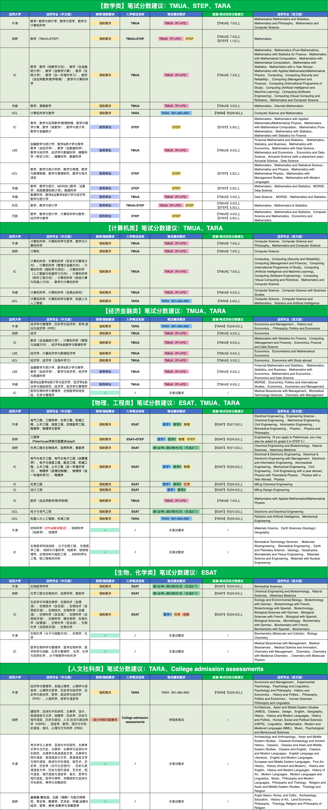

笔试模考综合评估报告
王一博
考生姓名
2026.05.13
考试日期
Round 1
考试轮次
本次模考说明
在申请英国顶尖名校的激烈竞争中，入学笔试（Admissions Tests）往往是筛选候选人的核心环节。TMUA侧重于考察严密的数学推理与证明能力，ESAT是对工程与自然科学知识深度及应用能力的综合检验，而TARA则直击学术阅读、逻辑推演与批判性思维的核心。
本次模考基于英国本科入学笔试（TMUA / ESAT / TARA）的真实题型与评分逻辑设计，旨在评估考生在数学推理、逻辑分析及学科应用等核心能力上的综合表现。
报告将结合本次考试成绩、正确率及答题情况，对考生当前竞争力进行分析，并为后续备考提供针对性的提升建议与院校目标分数建议参考；需要注意的是模考的分数只是当下的快照，通过数据发现你的优势板块与知识盲区，并据此调整冲刺策略，才是本次考试最大的价值所在。
接下来，让我们一起看看你的具体表现：
本次模考基于英国本科入学笔试（TMUA / ESAT / TARA）的真实题型与评分逻辑设计，旨在评估考生在数学推理、逻辑分析及学科应用等核心能力上的综合表现。
报告将结合本次考试成绩、正确率及答题情况，对考生当前竞争力进行分析，并为后续备考提供针对性的提升建议与院校目标分数建议参考；需要注意的是模考的分数只是当下的快照，通过数据发现你的优势板块与知识盲区，并据此调整冲刺策略，才是本次考试最大的价值所在。
接下来，让我们一起看看你的具体表现：
隐藏答题详情
98%
正确率
1h15m
用时
36/50
试卷分数
9
成绩
未作答
答错题
答对题
已作答题目单题平均用时
--
计算规则：当前科目已完成题目总用时 ÷ 已作答题目数量，未作答题不计入。
知识点掌握情况蜘蛛图
知识点评语：当前已具备一定基础，但特定题型仍存在盲区。建议将错题按知识点、题型和失分原因分类，找出重复出现的问题，再进行针对性强化。
知识点卡片导航
点击任一知识点卡片可进入对应详情页，查看核心内容摘要与关联知识点。
答题详情（共20题）
英国顶尖名校笔试目标分数线参考
以下目标分数建议仅作为参考，并不代表录取保证。英国本科录取通常会综合评估学生的 A-Level / IB 成绩、文书、推荐信、面试表现、笔试成绩及整体申请背景。笔试分数越接近高竞争力区间，通常越能增强申请中的学术竞争力。
*数据来源于唯寻内部最新申请信息
*数据来源于唯寻内部最新申请信息

后续学习建议
结合你的当前表现，后续可以考虑以下学习路径：
-
专项强化：适合当前距离目标分数仍有一定差距，或某些模块正确率明显偏低的学生。
本阶段重点是找出真正影响成绩的原因，而不是扩大刷题量，建议通过老师讲解和针对性练习，快速补齐影响成绩的关键问题。
- 将错题按知识点、题型和失分原因分类；
- 找出重复出现的问题；
- 对薄弱知识点进行重新学习；
- 每完成一轮训练后，记录正确率和用时变化。
-
冲刺提分：适合目标为顶级院校或考试临近、需要提高稳定性和临场表现的学生。
本阶段重点是找出在限时环境下影响成绩的关键因素，而不仅是知识层面的薄弱点，建议通过系统性的课程指导，重点提升解题策略与做题技巧。
- 哪些题目不该错；
- 哪些题目耗时过长；
- 哪些题目应该果断跳过；
- 哪些模块在压力下表现波动较大；
- 最后一轮备考应优先提升哪些内容。
- 自主巩固：适合自律性较强、目标分数与当前水平差距不大的学生。如果你目前基础较扎实，且能够保持稳定学习节奏，可以以自主复盘和定期模考为主。建议每周完成固定数量的专项训练，并每 2-3 周进行一次完整模考，以监测成绩变化。
结语
总体来看，本次模考为你提供了一次非常重要的阶段性反馈。无论当前成绩是否已经达到预期，它都帮助我们更清楚地看到了你的优势、短板以及下一阶段最需要投入精力的方向。
笔试备考不是单纯依靠刷题数量取胜，而是依靠清晰的复盘、持续的训练和稳定的考试策略逐步提升。每一次模考的价值，都不只在于分数本身，而在于它是否让你更接近目标。
希望你能以本次报告为起点，继续保持节奏，稳步提升。预祝你在今年的正式笔试中发挥出色，笔锋所至，心之所向，金榜题名，顺利进入理想大学！
笔试备考不是单纯依靠刷题数量取胜，而是依靠清晰的复盘、持续的训练和稳定的考试策略逐步提升。每一次模考的价值，都不只在于分数本身，而在于它是否让你更接近目标。
希望你能以本次报告为起点，继续保持节奏，稳步提升。预祝你在今年的正式笔试中发挥出色，笔锋所至，心之所向，金榜题名，顺利进入理想大学！